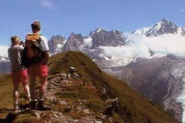

pointe de Lapaz (2313 m)

Départ : Montvauthier (1028 m)
Aller : 5,7 km, +1285 m, 216 min
Retour : 8,1 km, + 64 et - 1349 m, 163 min
Difficulté : E
Période : juillet - octobre
Remarque : -
Bibliographie : Sentiers du Mt Blanc (itinéraires 321, 322).
Prendre le chemin balisé du Coupeau, tourner à G vers Les Grosses Pierres, et par les Peutets gagner Pierre Blanche. Traverser sur les chalets de Chailloux par le plan de Benoï. Monter par l’itinéraire AsF© 16.3 (page 133) à l’Aiguillette des Houches puis suivre la crête jusqu’à la Pointe de Lapaz.
Revenir sous l’Aiguillette. Prendre la sente qui traverse à D puis descend la croupe jusqu’à Pierre Blanche. Retour par l’itinéraire de montée.
Photo : Pierre-Jean Giraud